Our Programmes.
Creating pathways to opportunity through practical skills, entrepreneurship, digital innovation and community leadership.
Explore Our ProgrammesTurning Potential Into Opportunity.
At Lamuka Innovation Center, we believe that skills, knowledge and opportunity can transform lives. Our programmes are designed to equip refugees, young people and underserved communities with practical tools to build sustainable livelihoods and become active contributors to their communities.
Through hands-on learning, entrepreneurship, innovation and community engagement, we create opportunities for individuals to discover their potential and shape their own futures.
Our Core Programmes.
Practical opportunities that equip individuals, strengthen communities and create sustainable futures.
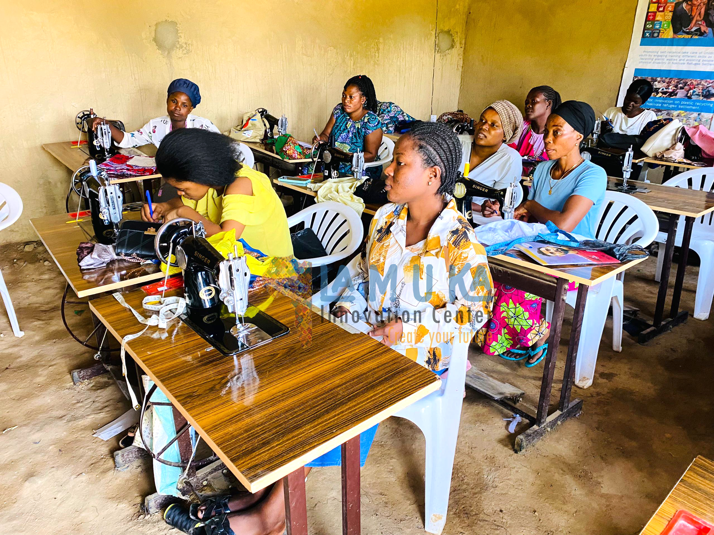
Vocational Skills Development
Equipping refugees and young people with practical, market-relevant skills that open pathways to employment, self-employment and economic independence.
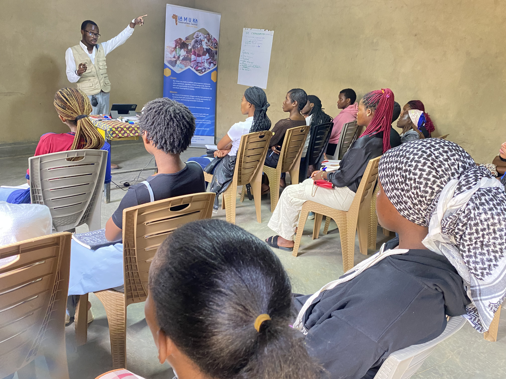
Entrepreneurship & Enterprise Development
Supporting aspiring entrepreneurs and small-business owners with business knowledge, practical training and opportunities to grow sustainable enterprises.
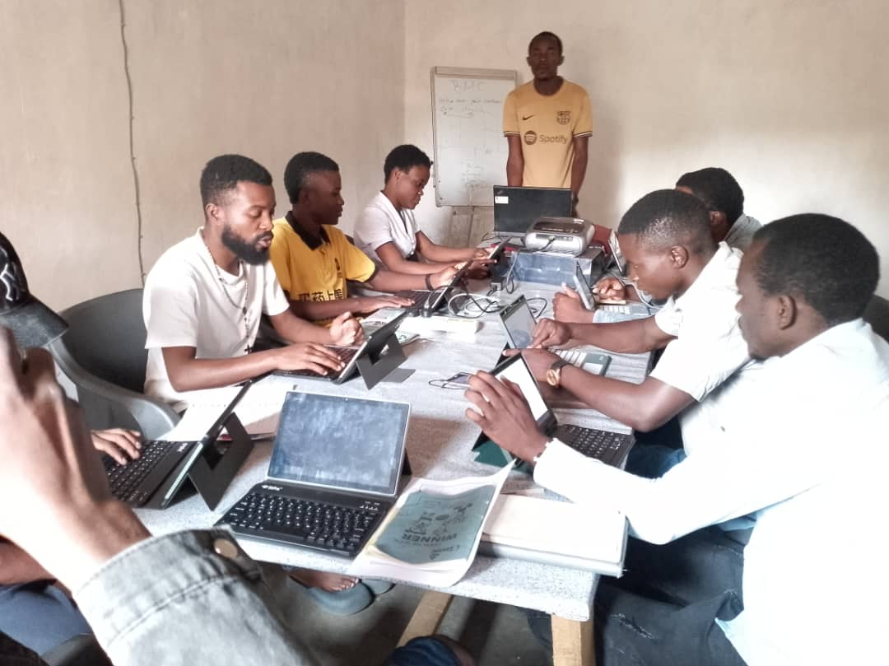
Digital Skills & Innovation
Promoting digital literacy, creativity and innovation to help young people access opportunities and develop solutions to community challenges.
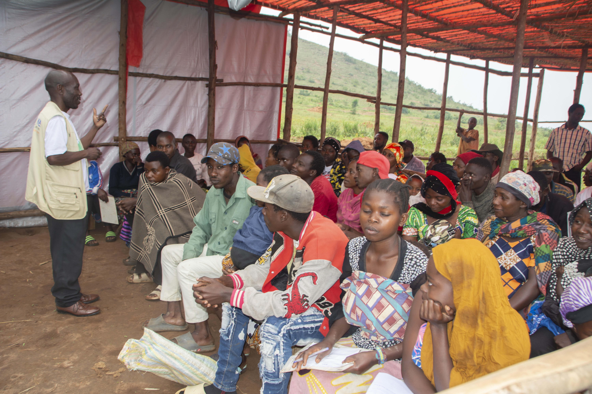
Community Leadership & Development
Encouraging community participation, leadership and collaboration to strengthen local initiatives and promote inclusive development.
Training Areas & Courses.
Explore the practical training opportunities offered through Lamuka Innovation Center. Our courses equip refugees, young people, women and host-community members with skills for employment, entrepreneurship and sustainable livelihoods.
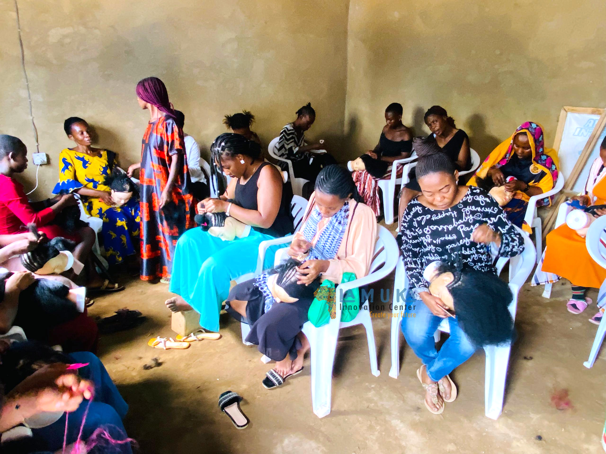
VOCATIONAL SKILLSVocational & Technical Skills Development
Practical skills for employment and self-employment.
- Tailoring and Fashion Design
- Hairdressing and Beauty Therapy
- Makeup Artistry
- Soap Making and Detergent Production
- Basket Weaving and Handcrafts
- Electricity and Solar pannel intallation
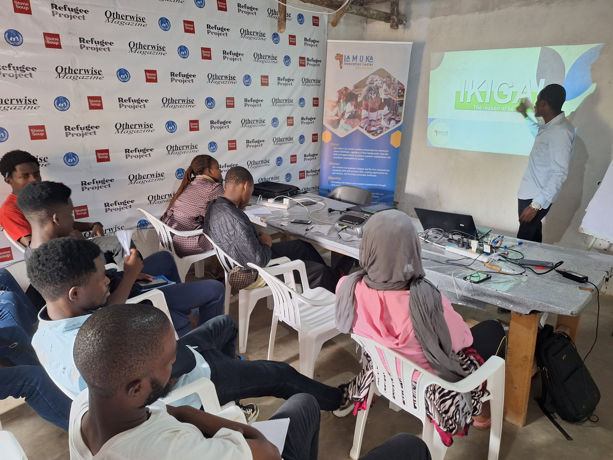
ENTREPRENEURSHIPEntrepreneurship & Business Development
Building and growing sustainable enterprises.
- Entrepreneurship and Business Development
- Social Entrepreneurship and Changemaker Training
- Small Business Management
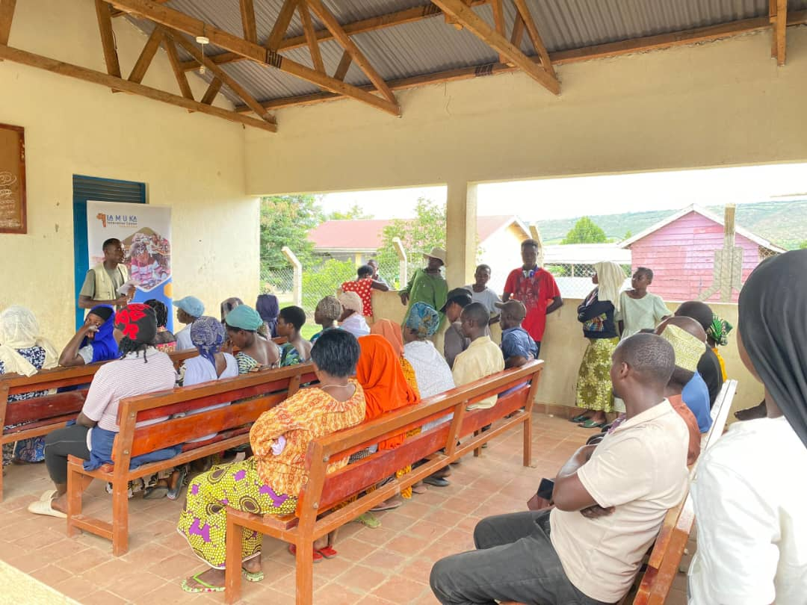
FINANCIAL LITERACYFinancial Literacy & Financial Inclusion
Developing responsible financial management skills.
- Financial Literacy Education
- Business Financial Management
- Village Savings and Loan Association (VSLA) Training
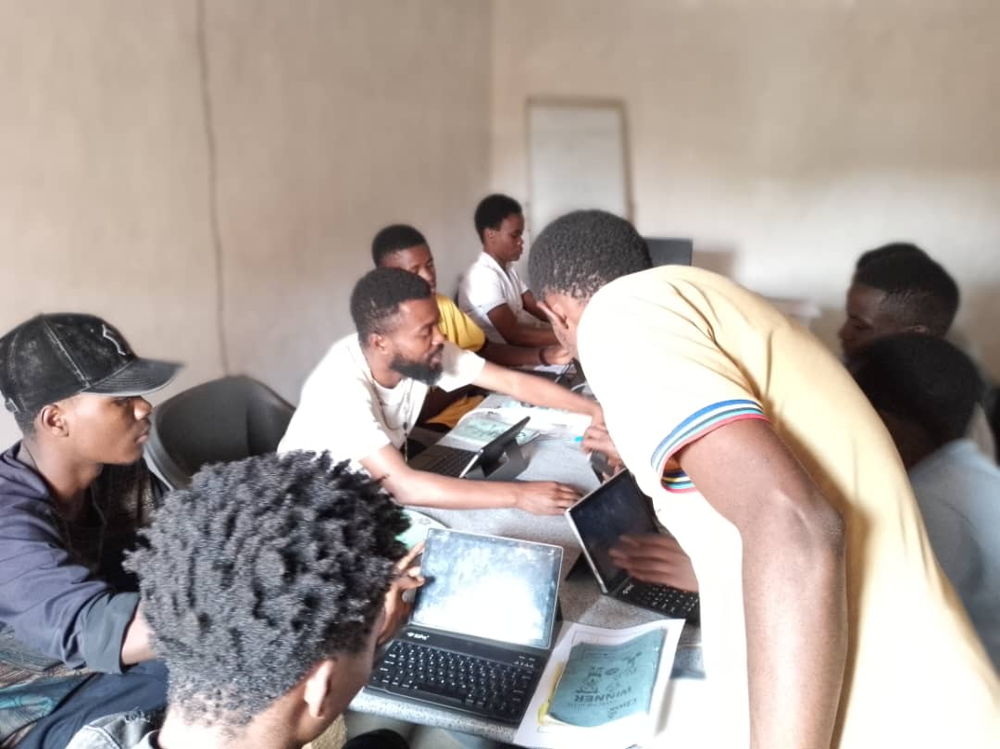
DIGITAL SKILLSDigital Skills & Technology
Preparing participants for opportunities in the digital world.
- Basic Computer Skills and Digital Literacy
- Microsoft Office Applications (Word, Excel and PowerPoint)
- Graphic Design and Digital Creativity
- Digital Marketing and Online Business
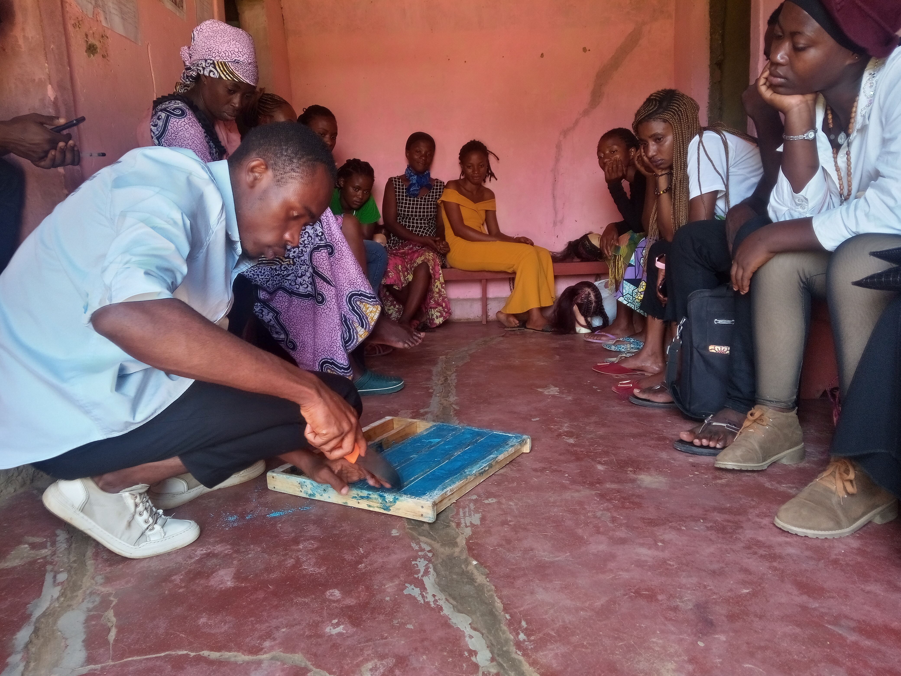
AGRIBUSINESSAgribusiness & Value Addition
Turning agricultural opportunities into sustainable businesses.
- Mushroom Production and Agribusiness
- Yoghurt Production and Food Processing
- Agribusiness Entrepreneurship
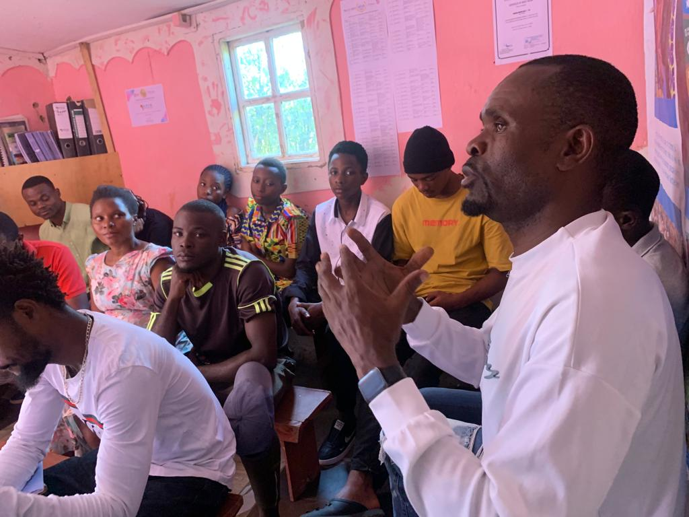
LEADERSHIP & PERSONAL DEVELOPMENTLeadership, Life Skills & Youth Development
Building confidence, leadership and responsible citizenship.
- Youth Leadership and Personal Development
- Life Skills and Employability Training
- Communication and Teamwork
- Problem-Solving and Conflict Resolution
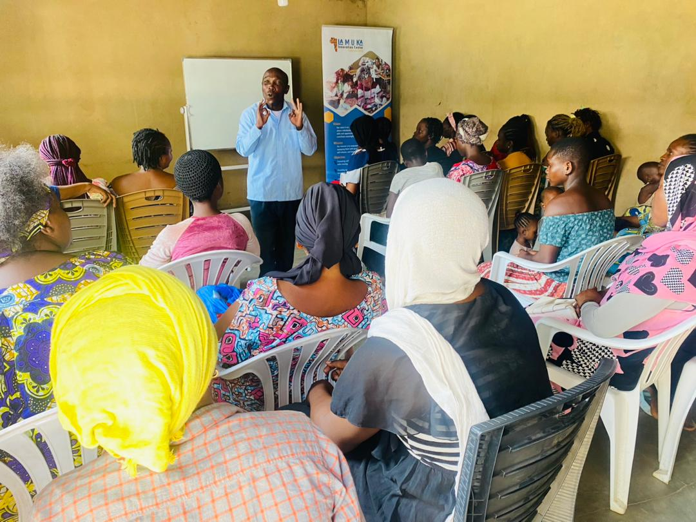
EMPLOYABILITY SKILLSEmployability & Career Readiness
Preparing young people to access employment and professional opportunities.
- Work Readiness Bootcamp
- CV and Résumé Writing
- Cover Letter and Job Application Preparation
- Interview Preparation and Mock Interviews
- Career Guidance and Workplace Professionalism
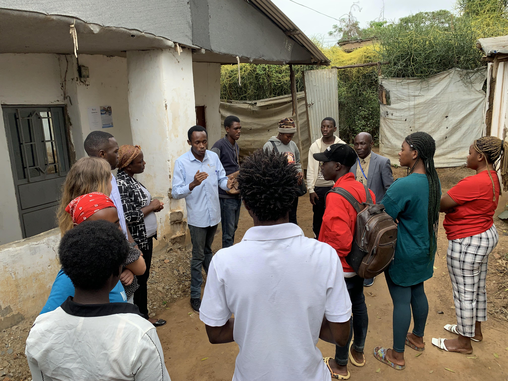
INNOVATION & CREATIVITYInnovation, Creativity & Social Entrepreneurship
Encouraging creative thinking and community-led solutions.
- Innovation and Design Thinking
- Project Development and Management
- Community Problem-Solving
- Social Innovation and Sustainable Development
Training courses are delivered according to programme priorities, available resources and training schedules. Contact Lamuka Innovation Center to learn about current and upcoming opportunities.
Ready to Build Your Skills?
Take the next step towards a brighter future. Connect with Lamuka Innovation Center to learn about our training opportunities and how to participate.
Enquire About TrainingFrom Learning to Lasting Impact.
We turn knowledge into practical skills, practical skills into opportunities, and opportunities into lasting change.
Learn
Participants acquire relevant knowledge, practical skills and the confidence to explore new possibilities.
Practice
Participants develop their abilities through hands-on exercises, demonstrations and practical activities.
Grow
Participants strengthen their ideas, explore enterprise opportunities and build pathways to sustainable livelihoods.
Transform
Individuals use their skills to improve their livelihoods, lead initiatives and contribute to stronger communities.
Help Us Create More Opportunities.
Every skill learned, every idea developed and every opportunity created brings us closer to stronger, more inclusive and self-reliant communities. Join us in making a difference.